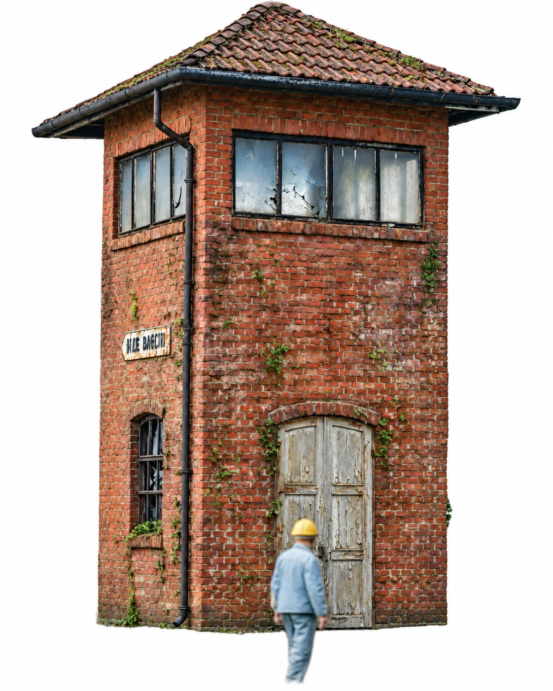

Cabine de sinalização após 10 anos exposta ao tempo
Com o passar dos anos, uma cabine de sinalização exposta ao sol, chuva, poeira e umidade perde gradualmente o aspecto de construção nova. Depois de aproximadamente dez anos, é comum apresentar características típicas de envelhecimento, que podem ser reproduzidas na maquete para aumentar o realismo.
Aspectos do envelhecimento
- Pintura: perde intensidade e desbota. Os tons vermelhos tendem a adquirir aparência mais terrosa, com áreas descascadas principalmente nos pontos mais expostos ao sol e à chuva.
- Tijolos: acumulam poeira, sujeira e manchas de umidade. Em alguns pontos podem surgir manchas esbranquiçadas, simulando eflorescência.
- Madeira e metal: portas e esquadrias de madeira podem adquirir tons acinzentados e apresentar marcas de desgaste. Nas peças metálicas podem aparecer pontos de ferrugem.

- Telhado: pode acumular sujeira, folhas, musgo e liquens, principalmente junto às bordas e locais de menor escoamento da água.
- Aspecto geral: a construção deve adquirir aparência envelhecida, suja e bastante utilizada, característica de antigas instalações ferroviárias.
Como fazer — técnica rápida para envelhecer a cabine em HO
1. Preparação
Limpe bem a peça para retirar poeira e resíduos. Se necessário, aplique uma camada fina de primer cinza ou vermelho e deixe secar completamente.
2. Cor-base dos tijolos
Pinte as paredes com vermelho-terra, terracota ou vermelho-óxido. Evite uma pintura excessivamente uniforme: pequenas diferenças de tonalidade ajudam a produzir um resultado mais natural.
3. Envelhecimento das paredes
Prepare uma mistura bem diluída de marrom-escuro com uma pequena quantidade de preto, formando um wash. Passe a mistura sobre as paredes, permitindo que ela penetre principalmente nos rejuntes e reentrâncias.
Depois da secagem, utilize a técnica de pincel seco com bege, areia ou outro tom claro sobre as partes mais salientes. Isso ajuda a reproduzir o desbotamento provocado pelo tempo.
4. Telhado
Pinte o telhado inicialmente em marrom-escuro ou na cor correspondente ao material representado. Depois de seco, aplique pequenas quantidades de verde-musgo com uma esponja ou pincel velho, principalmente nas bordas e reentrâncias.
5. Portas e esquadrias
Utilize cinza envelhecido, marrom-claro ou a cor original desejada. Depois da secagem, aplique um wash escuro nas frestas e cantos para destacar o desgaste. Nas peças metálicas podem ser acrescentados pequenos pontos em tons de ferrugem.
6. Sujeira e acabamento
Com pincel seco, aplique marrom-claro, terra ou bege principalmente próximo à base das paredes, nos cantos, abaixo das janelas, junto às portas e nas áreas onde a água da chuva normalmente escorreria.
Pigmentos em pó também podem ser utilizados para reforçar o efeito de poeira, terra e fuligem. O importante é trabalhar aos poucos.
7. Proteção
Depois que toda a pintura estiver completamente seca, aplique uma camada leve de verniz fosco para proteger o trabalho e eliminar brilhos indesejados.
O resultado deve ser uma cabine com aparência envelhecida e integrada ao ambiente ferroviário, evitando tanto o aspecto de peça recém-pintada quanto um envelhecimento exagerado.